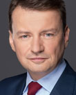

2026-08-07
Projekt wpłynął do Sejmu Druk nr 3009 ↗
w-tokuustawaII czytanie na posiedzeniu Sejmu (2026-10-22)Sejm 10/3009
| Proces | Sejm kadencja 10, nr 3009 |
|---|---|
| Wpłynął | 2026-08-07 |
| Ostatnia zmiana źródła | 2026-10-23 |
| RCL | legislacja.rcl.gov.pl ↗ |
| Źródło | api.sejm.gov.pl ↗ |
134 zdarzeń

10. kadencja, 65. posiedzenie, 4. dzień - Podsekretarz Stanu w Ministerstwie Sprawiedliwości Maria Ejchart 10. kadencja, 65. posiedzenie, 4. dzień (18-09-2026) 50. punkt porządku dziennego: Pierwsze czytanie rządowego projektu ustawy o zmianie ustawy - Kodeks karny wykonawczy (druk nr 3009). Podsekretarz Stanu w Ministerstwie Sprawiedliwości Maria Ejchart: Dziękuję bardzo. Pani Marszałek! Wysoka Izbo! Chciałabym przedstawić państwu rządowy projekt ustawy o zmianie ustawy - Kodeks karny wykonawczy. Celem projektu ustawy jest rozszerzenie stosowania dozoru elektronicznego w zakresie zezwolenia skazanemu na odbycie kary w systemie dozoru elektronicznego. Chodzi o rozszerzenie stosowania dozoru poprzez wprowadzenie możliwości udzielenia zezwolenia na odbycie kary w dozorze skazanemu, wobec którego orzeczono karę pozbawienia wolności w wymiarze niższym niż 3 lata - tak jest też teraz - i któremu pozostała do odbycia w zakładzie karnym część kary nieprzekraczająca 1 roku i 6 miesięcy. Obecnie jest to 6 miesięcy, na tym polega różnica, okres 3 lat pozostaje. Chodzi o wydłużenie okresu pozostającego do końca odbywania kary. Proszę państwa, system dozoru jest nieizolacyjnym sposobem odbywania kary pozbawienia wolności, który polega na kontroli zachowania skazanego poza zakładem karnym przy użyciu urządzeń monitorujących. Są to albo bransoletka na ręku albo bransoletka na nodze i urządzenie, które jest instalowane w miejscu zamieszkania skazanego. System ten przynosi korzyści nie tylko ekonomiczne, które są znaczne, ponieważ obecnie koszt odbywania kary w warunkach izolacyjnych wynosi ok. 6,5 tys. zł miesięcznie na jednego skazanego, natomiast wykonanie kary w dozorze elektronicznym to koszt ok. 1300 zł miesięcznie na jednego skazanego. Taki sposób odbywania kary wspiera readaptację społeczną, ponieważ umożliwia skazanemu utrzymywanie więzi rodzinnych, wykonywanie pracy, zobowiązań alimentacyjnych i innych, które ma skazany, ogranicza też negatywne skutki przebywania w izolacji penitencjarnej, demoralizacji, która z tym się wiąże. Wzmacnia też odpowiedzialność skazanego, ponieważ nakłada na niego określone obowiązki i wymaga odpowiedzialności z jego strony. Skazany nie może złamać warunków dozoru, a jeżeli je złamie, to natychmiast wraca do zakładu karnego. To jest znacznie skuteczniejszy system odbywania kary, na co wskazują badania prowadzone w Ministerstwie Sprawiedliwości. Obecnie poziom recydywy, czyli powrotności do przestępstwa osób, które odbywają karę w izolacji, wynosi 40%, natomiast 31% osób zakończyło odbywanie kary w dozorze. Prawdopodobieństwo ponownego skazania osoby, która odbywa karę w dozorze elektronicznym, jest o 30% mniejsze niż ponownego skazania osoby, która odbyła do końca karę w izolacji. 9 na 10 skazanych kończy odbywanie kary w dozorze bez zakłóceń. Proszę państwa, system dozoru elektronicznego nadal ma pozostać instytucją selektywną, która jest zarezerwowana dla skazanych, którzy uzyskali pozytywną prognozę kryminologiczną, nie stwarzają zagrożenia dla porządku prawnego, spełniają przesłanki formalne. Zawsze jest to decyzja sądu. Sąd musi dokładnie zbadać, czy dana osoba może odbywać karę w dozorze. Praktyka sądów w tym zakresie jest rygorystyczna. Mówiąc wprost, sądy nie szaleją, pozytywnie rozpatrują ok. 1/3 wniosków o wykonanie tej kary, które zostały złożone. Można zatem powiedzieć, że jest to środek naprawdę selektywny. Tak jak powiedziałam, decyzję zawsze podejmuje sąd penitencjarny, który ocenia postawę skazanego, stopień demoralizacji, sposób, w jaki odbywa karę pozbawienia wolności, jakie są jego warunki osobiste, rodzinne, zawodowe, jakie ryzyka ponownego naruszenia porządku prawnego niesie to za sobą. Ocena dokonana przez sąd może być poprzedzona wywiadem środowiskowym kuratora i zawsze jest poprzedzona badaniem w miejscu zamieszkania skazanego, czy są warunki bytowe i rodzinne, żeby w ten sposób karę odbywać i czy nie ma braku zgody ze strony współmieszkańców, domowników na to, żeby taka
10. kadencja, 65. posiedzenie, 4. dzień - Poseł Magdalena Małgorzata Kołodziejczak 10. kadencja, 65. posiedzenie, 4. dzień (18-09-2026) 50. punkt porządku dziennego: Pierwsze czytanie rządowego projektu ustawy o zmianie ustawy - Kodeks karny wykonawczy (druk nr 3009). Poseł Magdalena Małgorzata Kołodziejczak: Pani Marszałkini! Wysoka Izbo! Pani Ministro! Mam zaszczyt przedstawić stanowisko Klubu Parlamentarnego Koalicji Obywatelskiej w sprawie rządowego projektu zmiany przepisów Kodeksu karnego wykonawczego. Przedstawiony projekt zawiera propozycję nowelizacji ustawy z dnia 6 czerwca 1997 r. - Kodeks karny wykonawczy w zakresie dozoru elektronicznego, a przedłożona zmiana została wyłączona z projektu ustawy o zmianie Kodeksu karnego wykonawczego oraz innych ustaw. W proponowanych przepisach art. 431a § 1, § 6 pkt 2 Kodeksu karnego wykonawczego zakłada się objęcie systemem dozoru elektronicznego dodatkowej grupy skazanych - tych, wobec których orzeczono karę pozbawienia wolności w wymiarze niższym niż 3 lata, a którzy odbyli część kary i którym do odbycia w zakładzie karnym pozostaje część tej kary w wymiarze powyżej 6 miesięcy do 1 roku i 6 miesięcy. Wprowadzenie proponowanej zmiany będzie miało wpływ na szereg elementów, o czym bardzo szeroko mówiła pani ministra. Będzie to m.in. stworzenie alternatywy dla instytucji warunkowego przedterminowego zwolnienia, resocjalizacja skazanego poza jednostką penitencjarną, bardziej ekonomiczny sposób odbywania kary, ale także funkcjonowanie skazanego w normalnym, codziennym życiu, uczestniczenie w życiu rodziny, często praca, wychowywanie dzieci czy opieka nad osobami bliskimi. Przedmiotowy projekt także ujednolica przepisy i usuwa wątpliwości interpretacyjne. Przedmiot projektowanej regulacji nie jest objęty prawem unijnym. Projektodawca przewiduje wprowadzenie przepisów po 6 miesiącach od dnia ogłoszenia. Klub Parlamentarny Koalicja Obywatelska wnosi o przyjęcie przedłożonych przepisów. (Oklaski) Przebieg posiedzenia
10. kadencja, 65. posiedzenie, 4. dzień - Poseł Marcin Warchoł 10. kadencja, 65. posiedzenie, 4. dzień (18-09-2026) 50. punkt porządku dziennego: Pierwsze czytanie rządowego projektu ustawy o zmianie ustawy - Kodeks karny wykonawczy (druk nr 3009). Poseł Marcin Warchoł: Szanowna Pani Marszałek! Szanowni Państwo! Pani Minister! Jesteście pierwszą w historii władzą, która nie ma żadnych, ale to żadnych sukcesów. Pozostaje wam wobec tego jedynie chwalenie się mechanizmami, sukcesami Prawa i Sprawiedliwości. I tak było np. z inwestycjami, które dziś tak hucznie otwieracie, takimi jak mosty, obwodnice czy drogi. (Poseł Magdalena Małgorzata Kołodziejczak: Ale my dzisiaj mówimy o Kodeksie karnym.) Tak samo jest z systemem dozoru elektronicznego, a mianowicie systemem, który wprowadził pan minister Zbigniew Ziobro w 2007 r. Wy go zniszczyliście, doprowadzając w 2015 r. do zapaści, gdy sądy orzekały zaledwie kilka takich przypadków miesięcznie. Następnie znów rozbudowaliśmy ten system, dochodząc do maksymalnego poziomu 8 tys. osób obecnych w systemie dozoru elektronicznego z możliwościami do 10 tys. osób. Doszliście do władzy i co zrobiliście? Znów zapaść, znów to zdewastowaliście, nawet nie potrafiliście tego utrzymać. Przypomnę: obecnie jest to system, który obejmuje ok. 6 tys. osób, a było 5,5 tys. i nawet niżej. Czyli, proszę państwa, spartaczyli nawet to, co dostali odbudowane po latach wcześniejszych swoich rządów. I dzisiaj przychodzą i znów chwalą się cudzymi sukcesami. Chwalą się rozbudowywaniem systemu dozoru elektronicznego. Chwalą się sukcesami naszymi, tym, czego nie zdążyli tak bardzo zepsuć, że nie doszło do kilku przypadków miesięcznie tak jak w 2015 r. Na szczęście spadło to tylko do 5 tys. z owych 8 tys. za naszych czasów. Tak że, szanowni państwo, powiem więcej: powinienem wam podziękować. Powinienem podziękować temu rządowi, że nie spartaczył do końca tego, co dostał, kolejnej dobrej rzeczy, której nie zdążył zepsuć, a którą stworzył rząd Prawa i Sprawiedliwości. (Poseł Magdalena Małgorzata Kołodziejczak: Aż nie da się tego słuchać.) I za to rzeczywiście wam dziękuję. Tak jak pani minister mówiła, system dozoru elektronicznego jest rozszerzany. Są dwa moduły. Pierwszy moduł jest dla skazanych do półtora roku pozbawienia wolności i drugi między półtora roku do lat 3. W obecnym systemie ten przywilej jest zarezerwowany jedynie dla osadzonych, którym brakuje 6 miesięcy do końca kary, a będzie rozszerzony również na tych, którym brakować będzie 18 miesięcy do końca kary, więc wolumen osadzonych na pewno się zwiększy. Wobec tego, co powiedziałem wcześniej: rzeczywiście dziękuję za to, że nie spartaczyliście kolejnej dobrej rzeczy, którą stworzył rząd Prawa i Sprawiedliwości, a którą wcześniej zdewastowaliście w 2015 r. Chwała wam za to. Dziękuję bardzo. (Oklaski) Przebieg posiedzenia
10. kadencja, 65. posiedzenie, 4. dzień - Poseł Mirosław Adam Orliński 10. kadencja, 65. posiedzenie, 4. dzień (18-09-2026) 50. punkt porządku dziennego: Pierwsze czytanie rządowego projektu ustawy o zmianie ustawy - Kodeks karny wykonawczy (druk nr 3009). Poseł Mirosław Adam Orliński: Szanowna Pani Marszałek! Pani Minister! Wysoka Izbo! W imieniu Klubu Parlamentarnego Polskie Stronnictwo Ludowe przedstawiam nasze stanowisko odnośnie do rządowego projektu ustawy o zmianie ustawy - Kodeks karny wykonawczy. Tak jak pani minister powiedziała, rzeczywiście jest to projekt, który jest potrzebny. Jego zasadniczym celem jest rozszerzenie możliwości wykonywania kary pozbawienia wolności w systemie dozoru elektronicznego. Wydaje się, że ten kierunek jest jak najbardziej zasadny. Ten projekt ustawy, to uzasadnienie - to wszystko wydaje się być w dzisiejszych czasach jak najbardziej uzasadnione. Projekt zmierza do tego, aby większa grupa skazanych mogła odbywać karę pozbawienia wolności poza zakładem karnym, ale oczywiście pod pełną kontrolą elektroniczną. Skazany przebywa w określonym miejscu, jest pod dozorem. Ten system dozoru elektronicznego pozwala kontrolować skazanego, ale jednocześnie umożliwia mu wykonywanie różnego rodzaju pracy, utrzymanie więzi rodzinnych, o czym również mówiła pani minister, utrzymanie normalnego funkcjonowania, realizowanie obowiązków życiowych, normalne funkcjonowanie w takim zakresie, w jakim to jest możliwe zgodnie z zapisami tej ustawy. Cel to praktyczna zmiana, czyli poszerzenie kręgu skazanych, wobec których będzie można zastosować dozór elektroniczny. System daje korzyści. Ten projekt wydaje się być jak najbardziej zasadny, potrzebny. Sąd również w kwestii rozpatrywania podchodzi do tego zawsze racjonalnie, analizuje każdy przypadek, ocenia postawę skazanego, jego zachowanie, to, jak on odbywa karę i jak on funkcjonuje. Więc również ze względu na społeczny aspekt, że teraz nagle będzie to jakiś problem czy na jakiej podstawie będzie to oceniane - wydaje się, że wszystkie takie argumenty kontra temu projektowi wydają się bezzasadne. Ten system należy rzeczywiście rozbudowywać i idzie to w dobrym kierunku. To sprawia, że również skazany może po spełnieniu określonych warunków w jakimś sensie zacząć normalnie funkcjonować, a to także będzie sprzyjało temu, żeby, można powiedzieć, resocjalizacja, przywracanie danej osoby do funkcjonowania było łatwiejsze. Wydaje się, że ten projekt jest jak najbardziej zasadny. Jako klub parlamentarny popieramy go. Przebieg posiedzenia
10. kadencja, 65. posiedzenie, 4. dzień - Poseł Witold Tumanowicz 10. kadencja, 65. posiedzenie, 4. dzień (18-09-2026) 50. punkt porządku dziennego: Pierwsze czytanie rządowego projektu ustawy o zmianie ustawy - Kodeks karny wykonawczy (druk nr 3009). Poseł Witold Tumanowicz: Pani Marszałek! Wysoka Izbo! System dozoru elektronicznego powinien być stosowany tam, gdzie nie ma potrzeby dalszej izolacji skazanego w zakładzie karnym, a kara może być skutecznie wykonywana pod kontrolą państwa. Projekt rozszerza możliwość korzystania z tego systemu. W przypadku kary niższej niż 3 lata dozór będzie mógł objąć każdego skazanego, któremu do końca kary pozostało niewięcej niż półtora roku. Dzisiaj w tej sytuacji granicą jest 6 miesięcy. Warto przy tym spojrzeć na dane. System może jednocześnie obsługiwać 10 tys. osób, a obecnie wykorzystywany jest jedynie w 63%. Jednocześnie według danych przywołanych w uzasadnieniu, osoby odbywające karę w SDE mają o ok. 27% mniejsze prawdopodobieństwo ponownego skazania. To jest również argument ekonomiczny. Miesięczny koszt wykonania kary w zakładzie karnym wskazany w opracowaniu to ok. 6,5 tys. zł, podczas gdy w systemie dozoru elektronicznego to ok. 1360 zł. Przy pełnym wykorzystaniu projektowanych możliwości oszczędności mogą sięgać ok. 5 mln zł miesięcznie. Od dawna wskazujemy, że państwo powinno szczerzej korzystać ze środków wolnościowych tam, gdzie pozwalają na to charakter czynu, postawa skazanego i względy bezpieczeństwa. Więzienie powinno być przede wszystkim miejscem dla tych, którzy rzeczywiście muszą być izolowani od społeczeństwa. Dozór elektroniczny pozwala natomiast wykonywać tę karę i kontrolować skazanego bez ponoszenia wszystkich społecznych i finansowych kosztów izolacji. Dlatego rozszerzenie możliwości stosowania SDE oceniamy pozytywnie. To rozwiązanie, które może odciążyć jednocześnie zakłady karne, odciążyć wydatki państwa i ułatwić powrót skazanego do normalnego funkcjonowania w społeczeństwie. Dziękuję bardzo. Przebieg posiedzenia
10. kadencja, 65. posiedzenie, 4. dzień - Poseł Marcin Józefaciuk 10. kadencja, 65. posiedzenie, 4. dzień (18-09-2026) 50. punkt porządku dziennego: Pierwsze czytanie rządowego projektu ustawy o zmianie ustawy - Kodeks karny wykonawczy (druk nr 3009). Poseł Marcin Józefaciuk: Szanowna Pani Marszałek! Pani Minister! Wysoka Izbo! Na większość pytań pani minister już odpowiedziała, ale mam jeszcze kilka. W jaki sposób ministerstwo przygotuje sądy penitencjarne na prognozowany wpływ dodatkowych 7-8 tys. wniosków? Jak zostanie zapewniona ciągłość techniczna i finansowa systemu po zakończeniu obecnej umowy na jego eksploatację i rozwój, obowiązującej na lata 2022-2027 oraz jak projektodawca zamierza zapobiec sytuacji, w której dostęp do SDE będzie zależał przede wszystkim od posiadania stabilnego mieszkania i odpowiednich warunków rodzinnych? Dziękuję. Przebieg posiedzenia
10. kadencja, 65. posiedzenie, 4. dzień - Poseł Witold Tumanowicz 10. kadencja, 65. posiedzenie, 4. dzień (18-09-2026) 50. punkt porządku dziennego: Pierwsze czytanie rządowego projektu ustawy o zmianie ustawy - Kodeks karny wykonawczy (druk nr 3009). Poseł Witold Tumanowicz: Pani Marszałek! Wysoka Izbo! Pojemność systemu dozoru elektronicznego wynosi obecnie ok. 10 tys. osób, a wykorzystywana jest tylko w 63%. Z czego wynika tak niskie wykorzystanie istniejących możliwości systemu? Czy sama zmiana przepisów wystarczy, aby ten poziom istotnie zwiększyć? I w drugą stronę: Czy po zmianie przepisów nie będzie trzeba zwiększyć tej pojemności? Dziękuję bardzo. Przebieg posiedzenia
10. kadencja, 65. posiedzenie, 4. dzień - Podsekretarz Stanu w Ministerstwie Sprawiedliwości Maria Ejchart 10. kadencja, 65. posiedzenie, 4. dzień (18-09-2026) 50. punkt porządku dziennego: Pierwsze czytanie rządowego projektu ustawy o zmianie ustawy - Kodeks karny wykonawczy (druk nr 3009). Podsekretarz Stanu w Ministerstwie Sprawiedliwości Maria Ejchart: Pani Marszałek! Wysoka Izbo! Chciałam powiedzieć na początku, że wydaje mi się, że nie warto wykorzystywać dobrych pomysłów do politycznej walki, panie ministrze, panie pośle. Dobry pomysł, który wyszedł z Lewicy, został przyjęty w 2009 r. i od tej pory systematycznie jest rozwijany. (Poseł Marcin Warchoł: Nie, od nas wyszedł.) Jest konsensusowym projektem, rozwiązaniem. Naprawdę nie warto tego wykorzystywać. Naprawdę. Nie ma żadnego powodu. Powiem jedynie, że w poprzedniej kadencji ta sama propozycja, którą dzisiaj przedkładamy, była na biurku i pan minister Ziobro nie zgodził się na jej przyjęcie. Teraz odpowiadam na pytania. Proszę państwa, tak jak powiedziałam, sądy bardzo selektywnie stosują ten środek. To sądy są takim konserwatywnym elementem tego rozwiązania. Nie oceniam tego, czy to jest słuszne, czy nie. Bo to właśnie na sądzie ciąży obowiązek podjęcia tej decyzji i wzięcia na siebie odpowiedzialności za to, że skazany odbywa karę w warunkach wolnościowych. Tak jak powiedziałam, ok. 30% wniosków jest uwzględnianych przez sąd. To jest odpowiedź na pytanie, dlaczego tylko w tylu procentach system jest wykorzystywany. Jesteśmy obecnie w trakcie przetargu na nowy system, ponieważ ten przetarg i wykorzystanie tych... (Poseł Marcin Józefaciuk: Urządzeń.) ...urządzeń, które są stosowane w dozorze, kończy się w przyszłym roku, w 2027. Przetarg został mniej więcej ogłoszony 7 miesięcy temu, mamy 6 firm, które się zgłosiły do przetargu i w terminie musi zostać zakończony, i zostanie zakończony. Uważamy, że ta zmiana oznacza, że ok. 1 tys. skazanych więcej będzie odbywać karę w dozorze. Tylko 1 tys. I to nie zwiększy obciążenia sądów w taki sposób, który mógłby je sparaliżować. Pozwala to wykorzystać możliwości systemu. Proszę pamiętać, że 10 tys. urządzeń to nie znaczy, że 10 tys. może być w użyciu. Musi być ok. 1 tys. - 1,5 tys. urządzeń zapasowych, które się wymienia, zmienia, podjeżdża... bywa, że skazani je niszczą, bywa, że one się z jakichś tam względów psują, więc 1,5 tys. musi być w zapasie. I ta zmiana pozwoli wykorzystać ten system w całości. Prognozujemy, że ok. 7,5-8 tys. urządzeń będzie w użyciu. Jeszcze chciałam podać jedną ciekawą daną, którą się nie podzieliłam poprzednim razem, która może pokaże państwu, o jakim procencie skazanych mówimy. To są dane z 2025 r. Orzeczeń kary pozbawienia wolności, które zapadły w ubiegłym roku, jest 53 tys., z czego 34 tys. to są kary poniżej 3 lat, czyli 65%. 65% wyroków to są kary poniżej 3 lat. To do tych osób, które następnie odbędą przynajmniej 1,5 roku kary w zakładzie karnym, skierowana jest ta propozycja rozszerzenia odbywania kary w systemie dozoru. Bardzo dziękuję. (Oklaski) Przebieg posiedzenia
Brak zdarzeń dla wybranych filtrów.
Projekt ustawa z dnia o zmianie ustawy – Kodeks karny wykonawczy Art. 1. W ustawie z dnia 6 czerwca 1997 r. – Kodeks karny wykonawczy (Dz. U. z 2025 r. poz. 911 i 1423) w art. 43la: 1) w § 1 pkt 1 otrzymuje brzmienie: „1) wobec skazanego orzeczono karę pozbawienia wolności nieprzekraczającą 1 roku i 6 miesięcy albo wobec skazanego orzeczono karę pozbawienia wolności w wymiarze niższym niż 3 lata i któremu do odbycia w zakładzie karnym pozostała część tej kary w wymiarze nieprzekraczającym 1 roku i 6 miesięcy, a nie zachodzą warunki przewidziane w art. 64 § 2, art. 64a lub art. 65 § 1 lub 2 Kodeksu karnego;”; 2) w § 6: a) pkt 2 otrzymuje brzmienie: „2) których suma jest niższa niż 3 lata i któremu do odbycia w zakładzie karnym pozostała część tej kary w wymiarze nieprzekraczającym 1 roku i 6 miesięcy”, b) część wspólna otrzymuje brzmienie: „– a żadna kara nie została orzeczona za przestępstwo popełnione w warunkach przewidzianych w art. 64 § 2, art. 64a lub art. 65 § 1 lub 2 Kodeksu karnego.”. Art. 2. Wnioski o udzielenie skazanemu zezwolenia na odbycie kary pozbawienia wolności w systemie dozoru elektronicznego złożone i nierozpoznane do dnia wejścia w życie niniejszej ustawy podlegają rozpoznaniu według przepisów dotychczasowych. Art. 3. Ustawa wchodzi w życie po upływie 6 miesięcy od dnia ogłoszenia.
1)jednego roku i 6 miesięcy albo wobec skazanego orzeczono karę pozbawieniawolności w wymiarze niższym niż 3 lata i któremu do odbycia w zakładziekarnym pozostała część tej kary w wymiarze niewiększym niż 6 miesięcy, a niezachodzą warunki przewidziane w art. 64 § 2, art. 64a lub art. 65 § 1 i 2 Kodeksukarnego;odbywaniu kary pozbawienia wolności w systemie dozoru elektronicznego nie1) wobec skazanego orzeczono karę pozbawienia wolności nieprzekraczającą 1 roku i 6 miesięcy albo wobec skazanego orzeczono karę pozbawienia wolności w wymiarze niższym niż 3 lata i któremu do odbycia w zakładzie karnym pozostała część tej kary w wymiarze nieprzekraczającym 1 roku i 6 miesięcy, a nie zachodzą warunki przewidziane w art. 64 § 2, art. 64a lub art. 65 § 1 lub 2 Kodeksu karnego;2)pozostała część tej kary w wymiarze niewiększym niż 6 miesięcy– a żadna kara nie została orzeczona za przestępstwo popełnione w warunkachprzewidzianych w art. 64 § 2 lub art. 64a Kodeksu karnego.2) których suma jest niższa niż 3 lata i któremu do odbycia w zakładzie karnym pozostała część tej kary w wymiarze nieprzekraczającym 1 roku i 6 miesięcy – a żadna kara nie została orzeczona za przestępstwo popełnione w warunkach przewidzianych w art. 64 § 2, art. 64a lub art. 65 § 1 lub 2 Kodeksu karnego.
SEJM RZECZYPOSPOLITEJ POLSKIEJ X kadencja Druk nr 3169 S P R A W O Z D A N I E KOMISJI NADZWYCZAJNEJ DO SPRAW ZMIAN W KODYFIKACJACH o rządowym projekcie ustawy o zmianie ustawy - Kodeks karny wykonawczy (druk nr 3009) Marszałek Sejmu na 65. posiedzeniu Sejmu w dniu 18 września 2026 r. – na podstawie art. 87 ust. 2 w związku z art. 90 ust. 1 regulaminu Sejmu skierował powyższy projekt ustawy do Komisji Nadzwyczajnej do spraw zmian w kodyfikacjach w celu rozpatrzenia. Komisja Nadzwyczajna do spraw zmian w kodyfikacjach po rozpatrzeniu tego projektu ustawy na posiedzeniu w dniu 6 października 2026 r. wnosi: uchwalić raczy projekt ustawy z druku nr 3009 bez poprawek. W y s o k i S e j m Warszawa, dnia 6 października 2026 r. Przewodnicząca Komisji i Sprawozdawca /-/Barbara Dolniak Tłoczono z polecenia Marszałka Sejmu Rzeczypospolitej Polskiej